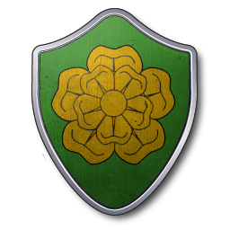
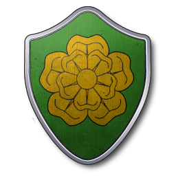

La maison Baratheon a pris son essor à la suite de la chute de la mythique lignée des rois de l’Orage. Ces derniers ont été vaincus par Orys Baratheon qui tua Argilac l’Arrogant, le dernier membre de la lignée de l’Orage. À l’époque déjà, les Baratheon sont habitués à gravir les échelons de la hiérarchie jusqu’au sommet. Ainsi, Argilac fut tué par Orys, qui avait réussi à devenir l’un des plus brillants généraux d’Aegon Targaryen. Pour le remercier, Aegon décida d’offrir la demeure d’Accalmie, l’ancienne demeure des rois de l’Orage mais il offrit également la fille d’Argilac. C’est à la suite du mariage avec la fille du roi de l’Orage qu’Orys choisit sa bannière, ses titres et sa devise. Trois siècles plus tard, Robert Baratheon devient roi des Sept Couronnes après une rébellion mettant fin au règne des Targaryen. Autour du roi Robert, on retrouve les frères Renly et Stannis qui siègent au conseil restreint du roi. Stannis détient le fief de Peyredragon et Renly est le suzerain de la demeure d’Accalmie.
La révélation du règne de Robert Baratheon concerne avant tout le mariage du Roi avec Cersei Lannister. De cette union naitront Tommen, Joffrey et Myrcella. Joffrey étant le fils ainé et par conséquent, l’héritier du Trône de Fer. L’union Baratheon-Lannister engendra de profondes perturbations quant à la hiérarchie royale. Les Lannister n'ayant jamais caché leur désir de royauté. C’est à la suite de la mort du Roi, 17 ans après son couronnement, lors d’une partie de chasse où celui-ci semblait trop ivre pour pouvoir se défendre, que le royaume va basculer dans la Guerre des Cinq Rois.


 
